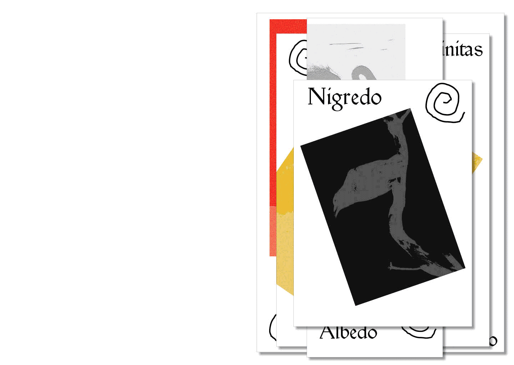
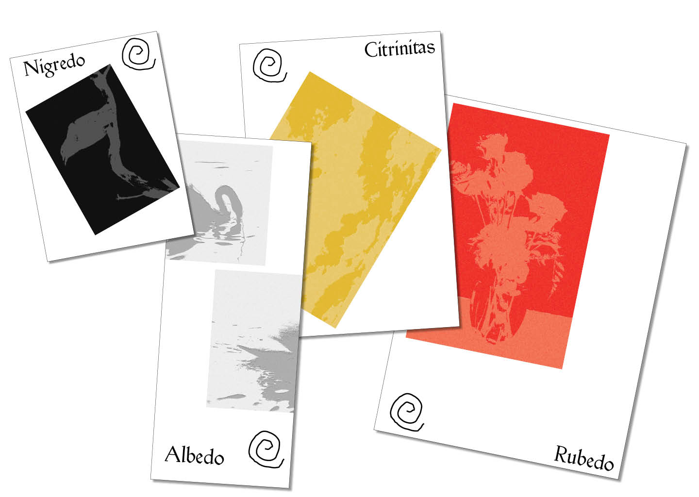
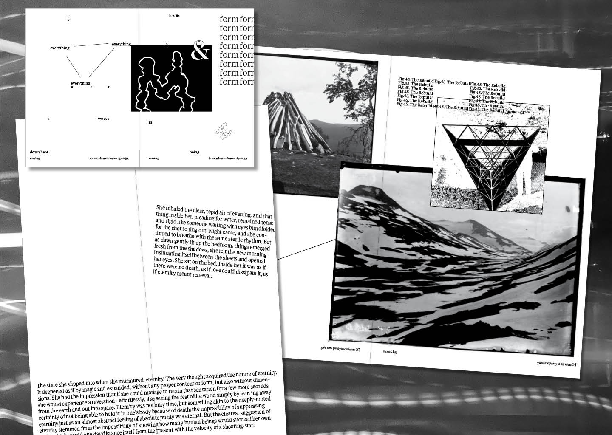
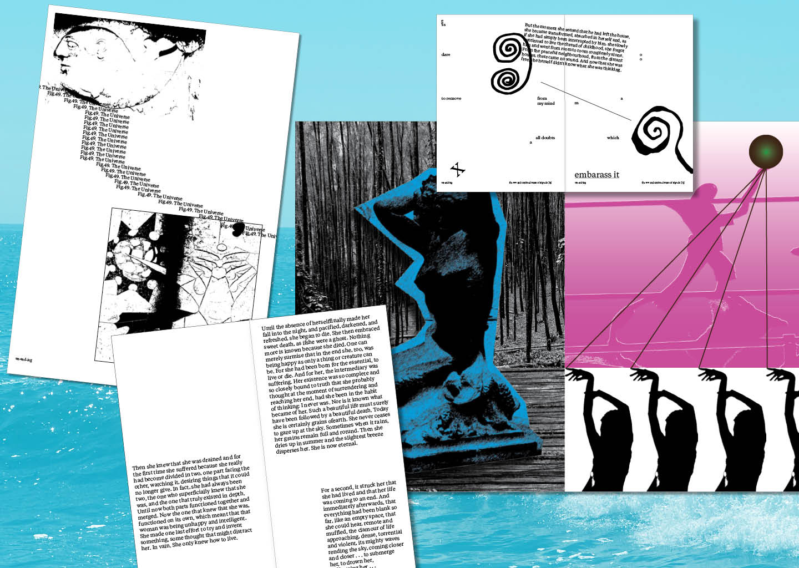
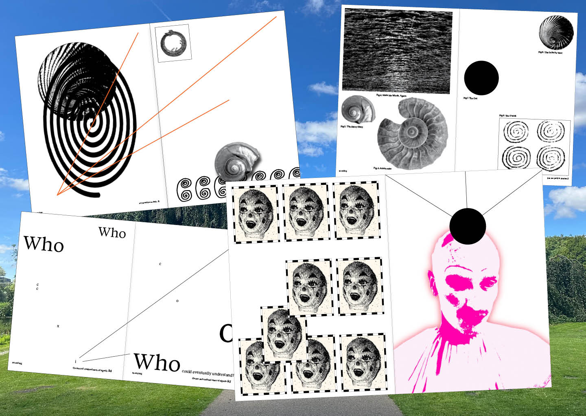

Un-End-Ing
2025
This academic project explores the idea of the end. What is the
end? Does the end signify the cessation of life? Of processes? Of movements? The end is
merely part of an ancient cycle. With an ending, comes a beginning and vice-versa. The
end is somewhere in this cycle of becoming, and un-becoming; it brings transformation,
evolution, mutation. In this ethereal, and quite emotional project, I explored what the
end signifies to me through the four stages of Alchemy, and creating a conjunction of
four books for each stage.
Academic Project, Editorial Design




